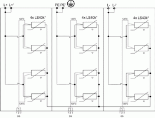

|
|
|
|
|
|

|
|
Технический бюллетень TNP008 20.01.2010 г. Применение УЗИП класса I+II.
Применение УЗИП класса I+II
Зоновая концепция молниезащиты предусматривает установку УЗИП на границах зон с целью уменьшения влияние электромагнитного поля и тока молнии на защищаемое оборудование. В случае защиты оборудования объектов ограниченных размеров допускается объединение зон молниезащиты с установкой на их границах УЗИП нескольких ступеней защиты.
При этом применение многоступенчатой системы защиты электрооборудования объектов от импульсных перенапряжений и помех имеет следующие недостатки:
а) Увеличение габаритных размеров схемы защиты из-за установки импульсных разделительных дросселей.
Импульсные разделительные дроссели устанавливаются для координации работы между УЗИП различных классов на каждую фазу и незаземленный нулевой проводник, в случае если расстояние между ними по кабелю электропитания составляет менее 10 м.
б) Потеря полезной мощности в импульсных разделительных дросселях.
Потеря полезной мощности в импульсных разделительных дросселях для трёхфазных сетей может достигать нескольких киловатт. Например: однофазный импульсный разделительный дроссель с индуктивностью L= 15 mH и IN = 250 A вносит потерю полезной мощности около 250 Ват при массе 4,5 кг и занимает объём 2 дм3;
в) Необходимость отдельной защиты от короткого замыкания УЗИП класса I и УЗИП класса II дополнительными предохранителями.
Дополнительные предохранители для защиты от КЗ УЗИП класса I и УЗИП класса II устанавливаются в цепь УЗИП в случае превышения номинального тока защитного аппарата от КЗ, установленного перед УЗИП, значения номинального тока дополнительного предохранителя, рекомендуемого производителем.
С целью устранения указанных недостатков многоступенчатых систем защиты, компанией Hakel были разработаны компактные и не допускающие потери полезной мощности устройства серии SPC (Surge Protection Compact). Компактность достигается за счет отсутствия необходимости установки импульсных разделительных дросселей между I и II ступенями защиты, а также благодаря применению дополнительных предохранителей при номинальном токе защитного аппарата установленного перед УЗИП менее 315 А. Так как УЗИП серии SPC включаются параллельно нагрузке, то не возникает потери полезной мощности при прохождении тока в фазных проводниках.
УЗИП серии SPC по способности выдерживать токовые нагрузки соответствует УЗИП класса I, согласно ГОСТ Р 51992-2002 (МЭК 61643-1-98), а по ограничению переходных напряжений допустимых для оборудования Up – УЗИП класса II. Такие устройства принято называть УЗИП класса I+II.
Для определения способности выдерживать токовые нагрузки УЗИП класса I+II испытываются номинальным разрядным током In 8/20 мкс, импульсным напряжением 1,2/50 мкс, импульсным током Iimp 10/350 мкс и максимальным разрядным током Imax 8/20 мкс.
УЗИП класса I+II применяются для защиты оборудования от импульсных перенапряжений, источниками которых являются:
·прямые удары молнии (ПУМ) в систему молниезащиты объекта или линию электропередач;
·межоблачные разряды или удары молнии в радиусе до нескольких километров вблизи от объектов и коммуникаций входящих и выходящих из объекта;
·коммутации индуктивных и емкостных нагрузок, короткие замыкания в распределительных электрических сетях высокого и низкого напряжения.
Устанавливаются в пределах 0A(B) - 1 зон молниезащиты (в соответствии с ГОСТ Р МЭК 62305-1 и CO-153-34.21.122-2003), при воздушном или кабельном вводе, как правило во вводно-распределительных устройствах (ВРУ) или главных распределительных щитах (ГРЩ).
УЗИП серии SPC выпускаются в однофазном и трехфазном исполнении. Применяются в электрических сетях переменного и постоянного тока, с системами заземления типа TN-S, TN-C, TT и IT.
УЗИП состоят из сборок мощных оксидно-цинковых варисторов и газонаполненного разрядника. Для предотвращения аварийных ситуаций связанных с перегревом варисторов в УЗИП устанавливаются терморасцепители, которые разрывают электрическую цепь внутри УЗИП, в случае нагрева варистора до температуры 120 °С. В случае срабатывания терморасцепителя УЗИП подлежит замене.
УЗИП серии SPC имеют визуальную или визуальную и дистанционную сигнализацию рабочего состояния. В наименовании УЗИП имеющих дистанционную сигнализацию рабочего состояния присутствует индекс DS.
Например: УЗИП SPC1 150 имеет только визуальную сигнализацию рабочего состояния, а SPC1 150 DS имеет визуальную и дистанционную сигнализацию.
Визуальный контроль рабочего состояния УЗИП проводится с помощью индикатора красного цвета, расположенного на корпусе устройства. Дистанционный контроль осуществляется с помощью применения «сухих» контактов дистанционной сигнализации (Рис.3).
|
Дистанционная сигнализация |
Визуальная сигнализация |
|
При исправном состоянии УЗИП контакты 1-2 замкнуты. При повреждении варистора контакт 2 переключается на контакт 3. |
При утопленном индикаторе красного цвета УЗИП исправно. При выдвинутом индикаторе устройство подлежит замене. |
|
Работа Авария |
Работа Авария |
|
Риc.3. Сигнализация рабочего состояния УЗИП серии SPC. | |
УЗИП серии SPC выпускаются в корпусах Mod.1 и Mod.2. Отличительной особенностью корпуса Mod.1 является наличие двойных клемм для подключения фазных проводников (L – L’), что позволяет применять схему подключения типа «V»- соединение и использовать провода большего сечения (Таблица 3, схемы Б, Г, Е). В случае необходимости все УЗИП серии SPC могут быть изготовлены в корпусах Mod.2.
Компания Hakel выпускает следующие УЗИП класса I+II серии SPC:
SPC1 (DS) – однофазные УЗИП комбинированного типа, состоящие из оксидно-цинковых варисторов и разрядника. Выпускаются на номинальное рабочее напряжение UN= 60, 110, 230 В для сетей переменного и постоянного тока с системами заземления типа TN-S, TT и IT. Способны отводить импульсный ток Iimp(L/N) (10/350)= 12, 20 кА, Iimp(N/PE)(10/350)=20 кА, максимальный разрядный ток Imax(L/N) (8/20)= 90, 150 кА. Обеспечивают уровень напряжения защиты при Iimp – Up < 600, 900, 1300 В. УЗИП серии SPC1 (DS) на номинальное рабочее напряжение 230 В изготавливаются в корпусах Mod.1, а на 60 В и 110 В - в Mod.2.
|
SPC1 90 (DS) SPC1 150 (DS) |
Корпус Mod.1 |
||
|
SPC1 150 (DS) 60 V SPC1 150 (DS) 110 V |
Корпус Mod.2 |
| |
|
Риc.4. УЗИП серии SPC1 (DS). | |||

SPC1.0 (DS) – однофазные УЗИП комбинированного типа, состоящие из оксидно-цинковых варисторов и разрядника. Выпускаются на номинальное рабочее напряжение UN= 230 В для сетей переменного и постоянного тока с системами заземления типа TN-S, TT и IT. Способны отводить импульсный ток Iimp(L/N) (10/350)= 12, 20 кА, Iimp(N/PE)(10/350)=80 кА, максимальный разрядный ток Imax(L/N) (8/20)= 90, 150 кА. Обеспечивают уровень напряжения защиты при Iimp – Up < 1300 В. УЗИП серии SPC1.0 (DS) отличаются от SPC1 (DS) более мощным разрядником в цепи N-PE способным отводить импульсный ток Iimp(N/PE)(10/350)=80 кА по сравнению с Iimp(N/PE)(10/350)=20 кА в УЗИП серии SPC1 (DS). УЗИП серии SPC1.0 (DS) изготавливаются в корпусах Mod.1.
|
SPC1.0 90 (DS) SPC1.0 150 (DS) |
Корпус Mod.1 |
||
|
Риc.5. УЗИП серии SPC1.0 (DS). | |||
SPC1.1 (DS) – однофазные УЗИП ограничивающего типа, состоящие из оксидно-цинковых варисторов. Выпускаются на номинальное рабочее напряжение UN= 60, 110, 230 В для сетей переменного и постоянного тока с системой заземления типа TN-C, а также как составные элементы схемы в сетях с системой заземления типа TN-S, TT и IT. Способны отводить импульсный ток Iimp(L/PEN) (10/350)= 12, 20 кА, максимальный разрядный ток Imax(L/PEN) (8/20)= 90, 150 кА. Обеспечивают уровень напряжения защиты при Iimp – Up < 600, 900, 1300 В. УЗИП серии SPC1.1 (DS) отличаются от SPC1 (DS) отсутствием разрядника, который обычно включается в цепь N-PE. УЗИП серии SPC1.1 (DS) на номинальное рабочее напряжение 230 В изготавливаются в корпусах Mod.1, а на 60 В и 110 В - в Mod.2.
|
SPC1.1 90 (DS) SPC1.1 150 (DS) |
Корпус Mod.1 |
| |
|
SPC1.1 150 (DS) 60 V SPC1.1 150 (DS) 110 V |
Корпус Mod.2 |
||
|
Риc.6. УЗИП серии SPC1.1 (DS). | |||

SPC3 (DS) – трехфазные УЗИП комбинированного типа, состоящие из оксидно-цинковых варисторов и разрядника. Выпускаются на номинальное рабочее напряжение UN= 230/380 В для сетей переменного тока с системами заземления типа TN-S и TT. Способны отводить импульсный ток Iimp(L/N) (10/350)= 12, 20 кА, Iimp(N/PE)(10/350)=20 кА, максимальный разрядный ток Imax(L/N) (8/20)= 90, 150 кА. УЗИП серии SPC3 (DS) изготавливаются в корпусах новой модификации.
|
SPC3 90 (DS) SPC3 150 (DS) |
Корпус Mod.1 |
| |
|
Риc.7. УЗИП серии SPC3 (DS). | |||

SPC3.0 (DS) – трехфазные УЗИП комбинированного типа, состоящие из оксидно-цинковых варисторов и разрядника. Выпускаются на номинальное рабочее напряжение UN= 230/380 В для сетей переменного тока с системами заземления типа TN-S и TT. Способны отводить импульсный ток Iimp(L/N) (10/350)= 12, 20 кА, Iimp(N/PE)(10/350)=80 кА, максимальный разрядный ток Imax(L/N) (8/20)= 90, 150 кА. Обеспечивают уровень напряжения защиты при Iimp – Up < 1300 В. УЗИП серии SPC3.0 (DS) отличаются от SPC3 (DS) более мощным разрядником в цепи N-PE, способным отводить импульсный ток Iimp(N/PE)(10/350)=80 кА по сравнению с Iimp(N/PE)(10/350)=20 кА в УЗИП серии SPC3 (DS). УЗИП серии SPC3.0 (DS) изготавливаются в корпусах Mod.1.
|
SPC3.0 90 (DS) SPC3.0 150 (DS) |
Корпус Mod.1 |
| |
|
Риc.8. УЗИП серии SPC3.0 (DS). | |||
SPC3.0 IT (DS) – трехфазные УЗИП комбинированного типа, состоящие из оксидно-цинковых варисторов и разрядника. Выпускаются на номинальное рабочее напряжение UN= 400, 500 В для сетей переменного тока с системой заземления типа IT. Способны отводить импульсный ток Iimp(L1/L2) (10/350)=12, 16, 20 кА, Iimp(L/PE) (10/350)=80 кА, максимальный разрядный ток Imax(L1/L2) (8/20)= 90, 120, 150 кА. Обеспечивают уровень напряжения защиты при Iimp – Up < 1600, 2100 В. УЗИП серии SPC3.0 IT (DS) изготавливаются в корпусах черного цвета Mod.2.
|
SPC3.0 90 IT/400 (DS)
SPC3.0 90 IT/500 (DS)
|
Корпус Mod.2 |
||
|
SPC3.0 120 IT/400 (DS)
SPC3.0 120 IT/500 (DS)
SPC3.0 150 IT/400 (DS)
|
Корпус Mod.2 |
||
|
Риc.9. УЗИП серии SPC3.0 IT (DS). | |||
SPC3.1 (DS) – трехфазные УЗИП ограничивающего типа, состоящие из оксидно-цинковых варисторов. Выпускаются на номинальное рабочее напряжение UN= 230 В для сетей переменного тока с системой заземления типа TN-C. Способны отводить импульсный ток Iimp(L/PEN) (10/350)= 12, 20 кА, максимальный разрядный ток Imax(L/PEN) (8/20)= 90, 150 кА. Обеспечивают уровень напряжения защиты при Iimp – Up < 1300 В. УЗИП серии SPC3.1 (DS) отличаются от SPC3 (DS) отсутствием разрядника, который включается в цепь N-PE. УЗИП серии SPC3.1 (DS) изготавливаются в корпусах Mod.1.
|
SPC3.1 90 (DS) SPC3.1 150 (DS) |
Корпус Mod.1 |
| |
|
Риc.10. УЗИП серии SPC3.1 (DS). | |||
SPC PV (DS) – УЗИП ограничивающего типа, состоящие из оксидно-цинковых варисторов. Выпускаются на номинальное рабочее напряжение UN= 600, 800, 1000 В для сетей постоянного тока с системой заземления типа TN-S. Способны отводить импульсный ток Iimp(L+/L-) (10/350)= 12 кА, максимальный разрядный ток Imax(L+/L-) (8/20)= 120 кА. Обеспечивают уровень напряжения защиты при Iimp – Up < 2000, 2400, 3400 В. Применяются для защиты от импульсных перенапряжений силовых цепей фотоэлектрических систем. УЗИП серии SPC PV (DS) изготавливаются в корпусах Mod.1.
|
SPC PV 600 (DS) SPC PV 800 (DS) SPC PV 1000 (DS)
|
Корпус Mod.1 |
| |
|
 | |||
|
Риc.11. УЗИП серии SPC PV (DS). | |||
С помощью комбинаций однофазных УЗИП серии SPC можно заменять трехфазные УЗИП, варианты замещения приведены ниже.
SPC3 (DS) = SPC1.1 (DS) + SPC1.1 (DS) + SPC1 (DS)
SPC3.0 (DS) = SPC1.1 (DS) + SPC1.1 (DS) + SPC1.0 (DS)
SPC3.1 (DS) = SPC1.1 (DS) + SPC1.1 (DS) + SPC1.1 (DS)
Схемы подключения УЗИП класса I+II
УЗИП может подключаться между фазами, между фазой и землей, между фазой и нейтралью, между нейтралью и землей, или в любой из комбинаций [1]. Под землей подразумевается главный заземляющий шинопровод (ГЗШ) или главный заземляющий зажим (ГЗЗ), соединение с которым будет кратчайшим.
Электрические схемы УЗИП серии SPC собраны по схеме подключения для защиты от противофазных (поперечных) перенапряжений в цепи провод-провод, как наиболее опасных по воздействию на защищаемое оборудование.
Наличие двойных клемм в корпусах Mod.1 позволяет применять схему подключения типа «V»- соединение. Однако данная схема имеет ограничение по номинальному току 63 А.
Во время своей работы УЗИП серии SPC и включенные с ними последовательно защитные устройства выдерживают временные перенапряжения (ВПН) UT в течение заданного промежутка времени tТ по ГОСТ Р 50571.18 [8].
Для защиты УЗИП от тока короткого замыкания, который УЗИП не в состоянии отключить самостоятельно, последствий его воздействия на электроустановку и обеспечения непрерывности подачи электропитания, последовательно с УЗИП включаются дополнительные защитные устройства от короткого замыкания – предохранители или автоматы. Для определения необходимости установки дополнительного защитного устройства от короткого замыкания следует сравнить номинальный ток защитного устройства установленного перед УЗИП IF1 с номинальным током дополнительного защитного устройства рекомендуемого производителем IF2. Компания Hakel для защиты УЗИП класса I+II рекомендует применять предохранители с номинальным током 315 А и характеристикой gG.
· IF1≥ IF2 – устанавливается дополнительный предохранитель,
· IF1≤ IF2 – без дополнительного предохранителя.
В таблице 1 представлены типовые схемы подключений УЗИП класса I+II для сетей с различными типами систем заземления.
Таблица 1. Схемы подключения УЗИП класса I+II для сетей с различными типами систем заземления.
|
А) Подключение УЗИП класса I+II серии SPC3.1 в электрическую сеть с системой заземления типа TN-C. |
Б) Подключение УЗИП класса I+II серии SPC3.1 в электрическую сеть с системой заземления типа TN-C («V» - соединение). F≤ 63 A c характеристикой gG. |
|
В) Подключение УЗИП класса I+II серии SPC3 (SPC3.0) в электрическую сеть с системой заземления типа TN-S. |
Г) Подключение УЗИП класса I+II серии SPC3 (SPC3.0) в электрическую сеть с системой заземления типа TN-S («V» - соединение). F≤ 63 A c характеристикой gG. |
|
Д) Подключение УЗИП класса I+II серии SPC3 (SPC3.0) в электрическую сеть с системой заземления типа TT. |
Е) Подключение УЗИП класса I+II серии SPC3 (SPC3.0) в электрическую сеть с системой заземления типа TT («V» - соединение). F≤ 63 A c характеристикой gG. |
|
Ж) Подключение УЗИП класса I+II серии SPC3.0 IT в электрическую сеть с системой заземления типа IT. |
З) Подключение УЗИП класса I+II серии SPC PV к фотоэлектрической системе. |
|
И) Подключение УЗИП класса I+II серии SPC1.1 в электрическую сеть постоянного тока с системой заземления типа TN-С. «-» заземлен. |
К) Подключение УЗИП класса I+II серии SPC1, SPC1.1 в электрическую сеть постоянного тока с системой заземления типа TN-S. |
Выбор УЗИП класса I+II
Выбор УЗИП класса I+II производится по следующим характеристикам:
1. Исполнение: однофазное, трехфазное, для постоянного тока;
2. Тип системы заземления: TN-C, TN-S, TT, IT;
3. Номинальное рабочее напряжение;
4. Способность отводить импульсные токи:
а) в цепи L/PEN, L/PE, L/N Iimp (10/350): 60, 90, 120, 150 кА;
б) в цепи N/PE Iimp (10/350): 20, 80 кА;
5. Уровень напряжения защиты Up.
Пункты 1-3 соответствуют характеристикам защищаемой установки. Импульсные токи определяются в соответствии Методики расчета распределения тока, ГОСТ Р 51992-2002 (МЭК 61643-1-98), ПРИЛОЖЕНИЕ А. Предполагая равномерное растекание тока молнии между системой заземления объекта и системой электропитания можно рассчитать пиковые значения импульсных токов, протекающих через УЗИП в сетях с различными типами системы заземления (Таблица 2) при различных уровнях молниезащиты [4].
Таблица 2. Пиковые значения импульсного тока для УЗИП класса I+II.
|
Уровень защиты |
Пиковое значение тока, кА | |
|
TNС, TNS, TT, IT (L/PEN, L/PE, L/N) |
TNS, TT, IT (N/PE) | |
|
I |
> 100/n |
> 100 |
|
II |
> 75/n |
> 75 |
|
III, IV |
> 50/n |
> 50 |
|
n- количество электрических проводников входящих в объект, через которые может течь ток молнии. Например для системы заземления типа TN-S это L1, L2, L3, N и РЕ, то есть n=5. | ||
Выбор УЗИП класса I+II по импульсному току необходимо производить запасом 20 – 30 % учитывая возможную неравномерность растекания токов по различным проводникам. Особое внимание необходимо уделить выбору УЗИП для защиты нулевого провода, так как через него может протекать ток до 100 кА (10/350 мкс).
При применении УЗИП серии SPC для защиты оборудования при воздушном вводе электропитания, существует вероятность выхода его из строя при прямом ударе молнии непосредственно в линию электропередачи возле ввода в объект из-за большой энергии тока прямого удара молнии. Для полного исключения такой вероятности применяется многоступенчатая схема защиты с использованием УЗИП класса I и УЗИП класса II.
УЗИП серии SPC обеспечивают безопасный уровень напряжения защиты для электрооборудования объекта и УЗИП последующих ступеней защиты, в соответствии с ГОСТ Р 50571.19-2002. Для компенсации падения напряжения на длинных проводниках, для защиты высокочувствительного оборудования дополнительно, непосредственно возле защищаемого оборудования, устанавливаются УЗИП класса III.
Монтаж УЗИП класса I+II
УЗИП класса I+II устанавливаются в пределах 0A(B) - 1 зон молниезащиты [2, 3, 4] во вводно-распределительном устройстве (ВРУ), главном распределительном щите (ГРЩ) или отдельном распределительном щите рядом с вводом электропитания в объект[8]. Монтаж устройств производится на DIN-рейку 35 мм.
ЗАО «Хакель Рос» выпускает распределительные щиты собственного производства с установленными УЗИП различных классов - щитки защиты от импульсных перенапряжений низковольтные комплектные - ЩЗИП, ТУ 3434-001-79740390-2007. ЩЗИП, производства ЗАО «Хакель Рос», изготавливаются из комплектующих ведущих мировых производителей, отличаются высоким качеством сборки, соответствуют требованиям электромагнитной совместимости, имеют сертификат соответствия РОСС RU.МЛ02.В00405 требованиям ГОСТ Р 51321.1-2000. Каждый ЩЗИП изготавливается по индивидуальному проекту, учитывающему все особенности объекта. Для выбора и заказа ЩЗИП необходимо заполнить опросный лист, размещенный на сайте www.hakel.ru в разделе Информация, и переслать в технический одел ЗАО «Хакель Рос».
При подключении проводников к УЗИП необходимо избегать образования петель из-за воздействия электродинамических сил в момент прохождения импульсных токов, совместной прокладки защищенного и незащищенного участков проводника, защищенного и заземляющего проводников. Варианты прокладки проводников различного назначения приведены на Рис. 13.
Риc.7. Варианты прокладки защищенных и влияющих проводников а), б) - неправильные, в) - правильный.
Размещение УЗИП должно быть выполнено таким образом, чтобы расстояния между точкой подключения, УЗИП и землей были минимальными, а соединительные проводники между ними проложены кратчайшим путем, так как из-за паразитной индуктивности на соединительных проводниках в момент прохождения импульсного тока возникает падение напряжения, которое в свою очередь прикладывается к нагрузке.
Для уменьшения уровня напряжения прикладываемого к нагрузке рекомендуется использовать соединительные проводники длиной не более 0,5 м. а также применять схему подключения типа «V»- соединение, при котором УЗИП «последовательно» включается с нагрузкой.
Применять «V» - соединение для подключения УЗИП возможно как при исполнении с одинарными клеммами (Мod.2), так и при исполнении с двойными клеммами (Mod.1). Ограничением для этой схемы является сечение присоединяемых проводников для одинарных клемм и значение номинального тока для перемычки между двойными клеммами.
Для подключения УЗИП к фазным и нулевым проводникам рекомендуется использовать провод с минимальным сечением 16 мм2 Cu. Соединение с землей можно выполнять проводом с минимальным сечением 16 мм2, однако рекомендуется применять провод с сечением 25 мм2, а в случае воздействия половины тока молнии и с сечением 35 мм2.
Литература:
1. ГОСТ Р 51992-2002 (МЭК 61643-1-98) «Устройства для защиты от импульсных перенапряжений в низковольтных силовых распределительных системах. Часть 1. Требования к работоспособности и методы испытаний»;
2. МЭК 1312-1: 1995 Защита от электромагнитного импульса молнии. Часть 1. Общие принципы;
3. МЭК 62305 «Защита от удара молнии» Части 1-5;
4. СО–153-34.21.122-2003 «Инструкция по устройству молниезащиты зданий, сооружений и промышленных коммуникаций»;
5. ГОСТ Р 50571.19-2000 «Электроустановки зданий. Часть 4. Требования по обеспечению безопасности. Глава 44. Защита от перенапряжений. Раздел 443. Защита электроустановок от грозовых и коммутационных перенапряжений»;
6. ГОСТ 2.727—68 «Обозначения условные графические в схемах. Разрядники; предохранители»;
7. ГОСТ 2.728—74 «Обозначения условные графические в схемах. Резисторы, конденсаторы»;
8.ГОСТ Р 50571.26-2002 (МЭК 60364-5-534-97) «Электроустановки зданий. Часть 5. Выбор и монтаж электрооборудования. Раздел 534. Устройства для защиты от импульсных перенапряжений».
9. ГОСТ Р 50571.18-2002 (МЭК 60364-4-442-93) «Электроустановки зданий. Часть 4. Требования по обеспечению безопасности. Глава 44. Защита от перенапряжений. Раздел 442. Защита электроустановок до 1 кВ от перенапряжений вызванных замыканиями на землю в электроустановках выше 1 кВ».
10. ПУЭ (7-е изд.);
11.Технические материалы компании Hakel.